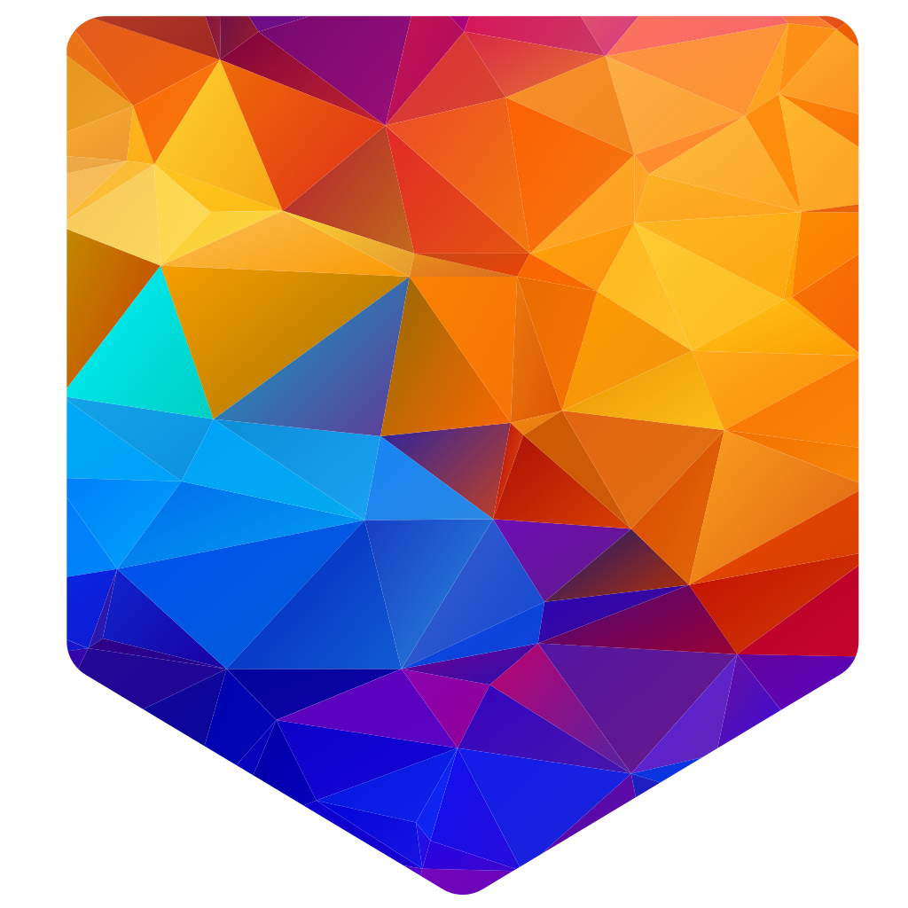

Set it up
Follow the Tournament Wizard. It explains the supported sport and format choices and creates your registration resources.

10-minute setup goal · In development
Your tournament, connected.
We’re building a way to create your tournament in 10 minutes. The Tournament Wizard guides you through the sport, format and event details, then creates player and guest registration forms, prepares match schedules and handles configured event emails. During play, manage scores, changes and announcements from the Organizer Dashboard. Run tournaments and leagues across different sports.
Organisers use the dashboard on mobile or desktop. Players and guests register and follow online—no app download needed.
Starting with sports organisers. Currently in development.

THE TOURNSTACK APPROACH
Create tournaments and manage leagues, registrations, schedules, scores and event changes from mobile or desktop.
A public tournament page for registrations, participants and results. Share it on its own or display it within your website.
Show live scores and organiser announcements on venue screens, keeping players and spectators informed during the event.
Run your event’s prize draw from the Organizer Dashboard, with eligible players, spectators and people you add.
HOW IT WORKS
Guided choices get the event started. The organiser stays in control as it unfolds.
Follow the Tournament Wizard. It explains the supported sport and format choices and creates your registration resources.
Enter scores and handle injuries, withdrawals, substitutions and disruptions through the Organizer Dashboard.
Send one announcement to all of your event’s Tournament Portals and Live Screens.
TournStack handles configured registration confirmations and event emails when the relevant action occurs. You review the settings and stay in control of event decisions.
YOUR EVENT, YOUR COMMUNITY
The B2B version can use your logo, colours and name, with the option to remove TournStack branding. Share your Tournament Portal on its own, within your website or on dedicated club pages. Players and guests follow through browser links.
TournStack is in development. Ask us about the scope available for a pilot.
WHO IT’S FOR
From a local tournament to a season of competition, the people running the event should have more room for the people taking part.
FOR SPORTS ORGANISERS
For individuals, agencies and organisations running tournaments or leagues—including sports centres and local clubs. Set up competitions with guided choices, manage changes from a shared mobile or desktop dashboard, and keep players and guests informed through your Tournament Portal and venue Live Screens. The B2B version can use your logo, colours and name.
Tell us about the events you organise.
FOR PERSONAL EVENTS
Planning a birthday tournament or a competition with friends? That’s part of our longer-term direction too. We want guided setup and simple event control to work for first-time organisers, with broader personal access following the B2B experience.
Personal access is planned for a later stage.
The core system was used at the Timeless Passion Padel Tournament in Lisbon. Organizer tools, a public tournament page, live score displays and TournStack Draw came together for one event.
It was one early event. We’re now refining the system for pilots with sports organisers, learning what needs to work reliably across more events.

THE LONG VIEW
We’re developing TournStack for one-off tournaments and ongoing leagues, from recreational events to regional and semi-pro competition. Sports organisers come first, with each sport and format tested as the product develops.
Broader personal access follows once the setup and event experience are ready. That version would retain TournStack branding, while players and spectators continue to use browser links to join and follow events.
Read our visionVision & Commercial Lead
R&D & Technology Lead
Cloud architecture, live reliability and deployment.
LET’S TALK
Whether you run tournaments or leagues, manage a club or see a useful way to work together, tell us what you’re thinking. We’re open to a conversation.